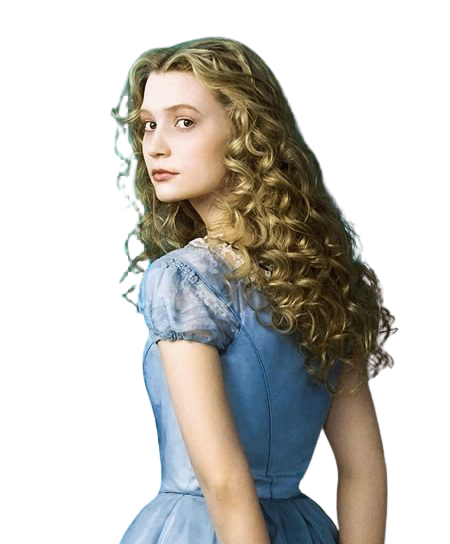

“¿Por qué todo el mundo me dice lo que
tengo que hacer ? ¡No!, este es mi sueño
y yo decidiré como continua”

Alicia, una niña en la época victoriana media, Alicia vive una aventura subterránea tras caer accidentalmente a través de la madriguera de un conejo en el País de las Maravillas.
Sombrerero, tiene una vida común vendiendo champiñones con su hija Grace en el mercado. Parece un hombre normal, exceptuando un detalle: Es poseedor de un sombrero mágico, capaz de crear portales entre los diferentes mundos, entre ellos el País de las Maravillas.
Reina de corazones, es una mujer perversa, vanidosa, histérica y chillona. Es muy irascible, no aprecia a nadie, y detesta perder. Siempre quiere tener razón en todo, y es una tirana absoluta. Abusa de su marido, de sus soldados las cartas y de todos sus súbditos.
Reina blanca, hermana de la reina roja, ella se mueve con gracia, como si bailara; es bondadosa, y vela por las criaturas del Submundo, todo lo contrario a su hermana. Vive en Marmóreo, la ciudad enteramente blanca. Ella proporciona a Alicia la armadura que se complementa con la Espada Vorpalina.
Conejo Blanco, mira su reloj y va siempre apresurado diciendo “¡Dios mío, voy a llegar tarde!”. Refleja la ansiedad, la conducta paranoica y la exigencia a veces exagerada que los mayores imponen a los niños.
Gato Sonriente, el gato de Cheshire es el guía de Alicia, el que pone la coherencia a un mundo totalmente irracional, dentro del caos existe el orden. ... Aunque su sarcasmo es más que notable durante toda la historia, el gato es un ser racional, sensato y razonable.
Los Gemelos, son unos personajes originarios de las adaptaciones de las novelas de Alicia. ellos la advierten de que la curiosidad puede jugarte malas pasadas, y le cuentan a Alicia la historia de la Morsa y el Carpintero.
La Oruga Azul, es la lógica racional, las dudas y la paciencia como madre de la ciencia. Vitalidad. El Gato de Cheshire destaca por su sonrisa. Representa el sentido vital: “Siempre llegarás a alguna parte si caminas lo bastante”.